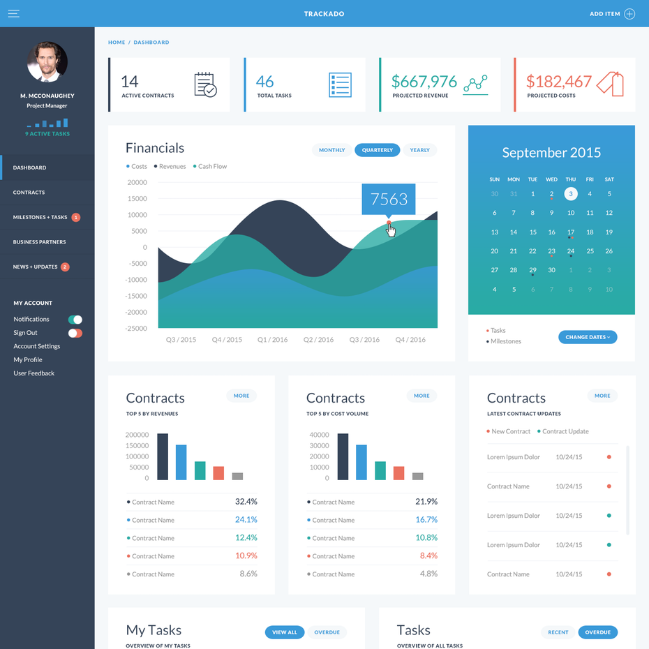
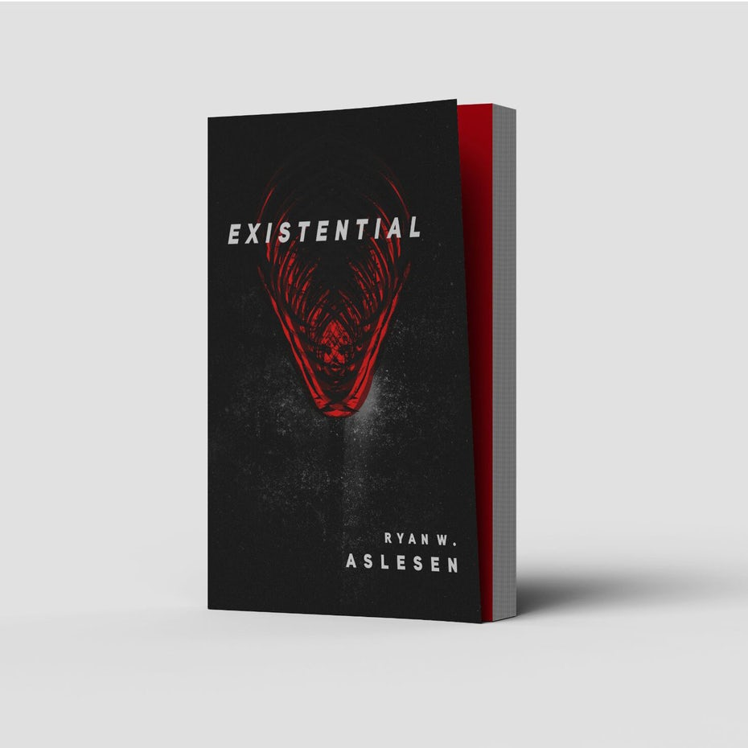
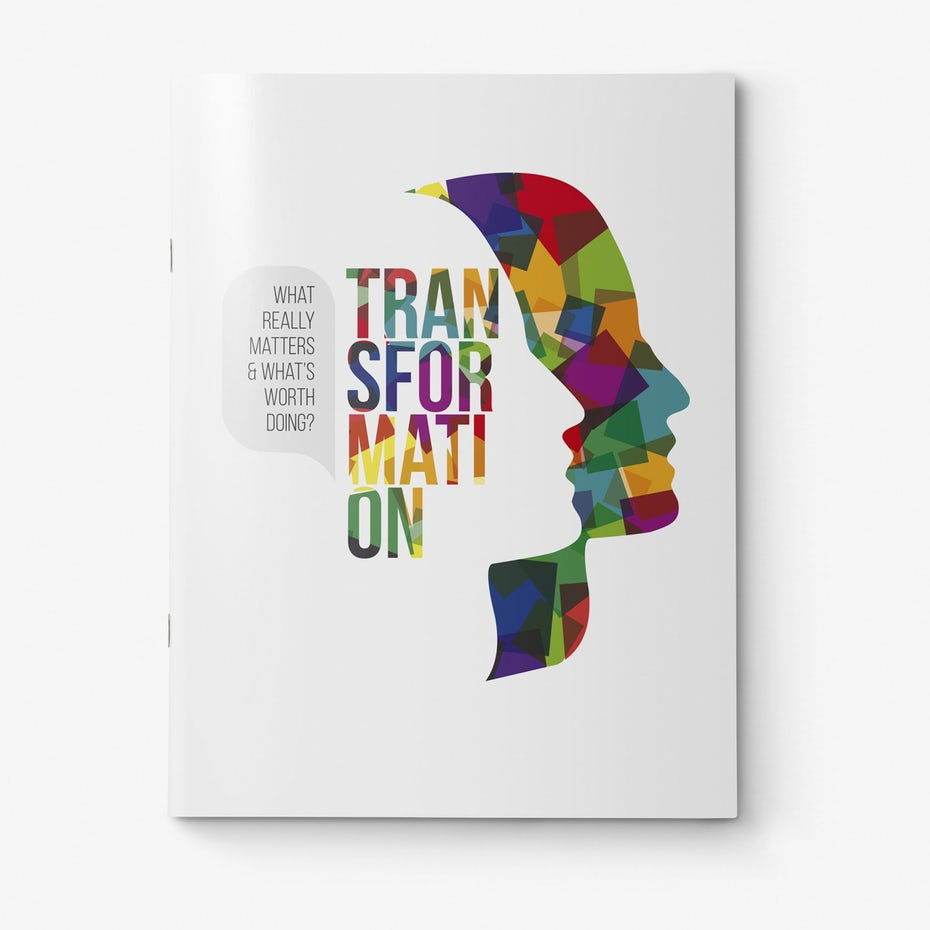
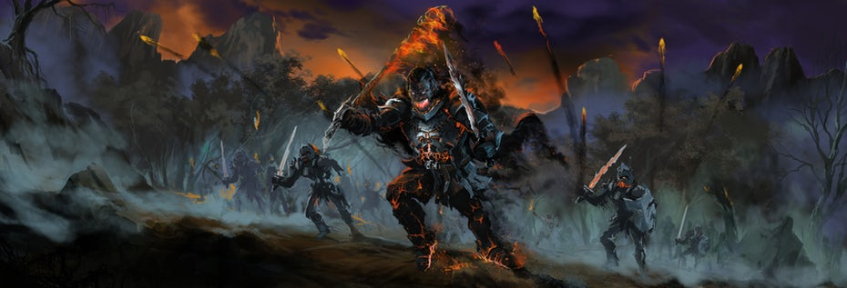

A brand is a relationship between a business or organization and its audience. A brand identity is how the organization communicates its personality, tone and essence, as well as memories, emotions and experiences. Visual identity graphic design is exactly that: the visual elements of brand identity that act as the face of a brand to communicate those intangible qualities through images, shapes and color.Designers that specialize in visual identity graphic design collaborate with brand stakeholders to create assets like logos, typography, color palettes and image libraries that represent a brand's personality. In addition to the standard business cards and corporate stationary, designers often develop a set of visual brand guidelines (style guides) that describe best practices and provide examples of visual branding applied across various media. These guidelines help to ensure brand consistency throughout future applications.
When most people think of graphic design, they think of designs created for marketing and advertising.
Companies depend on successful marketing efforts to tap into their target audience's decision-making process. Great marketing engages people based on the wants, needs, awareness and satisfaction they have about a product, service or brand. Since people will always find visual content more engaging, graphic design helps organizations promote and communicate more effectively.
Examples of marketing graphic design
- Postcards and flyers
- Magazine and newspaper ads
- Posters, banners and billboards
- Infographics
- Brochures (print and digital)
- Vehicle wraps
- Signage and trade show displays
- Email marketing templates
- PowerPoint presentations
- Social media ads, banners and graphics

A user interface (UI) is how a user interacts with a device or application. UI design is the process of designing interfaces to make them easy to use and provide a user-friendly experience.
A UI includes all of the things a user interacts with-the screen, keyboard and mouse-but in the context of graphic design, UI design focuses on the user's visual experience and the design of on-screen graphic elements like buttons, menus, micro-interactions, and more. It's a UI designer's job to balance aesthetic appeal with technical functionality.
Examples of user interface graphic design
- Web page design
- Theme design (WordPress, Shopify, etc.)
- Game interfaces
- App design
4.Publication graphic design
Publications are long-form pieces that communicate with an audience through public distribution. They have traditionally been a print medium. Think books, newspapers, magazines and catalogs. However, there's recently been a significant rise in digital publishing.Graphic designers that specialize in publications work with editors and publishers to create layouts with carefully selected typography and accompanying artwork, which includes photography, graphics and illustrations. Publication designers may work as freelancers, as creative agency members or in-house as part of a publishing company.
Examples of publication graphic design:
- Books
- Newsletters
- Directories
- Annual reports
- Magazines
- Catalogs

5.Packaging graphic design
Most products require some form of packaging to protect and prepare them for storage, distribution, and sale. But packaging design can also communicate directly to consumers, which makes it an extremely valuable marketing tool. Every box, bottle and bag, every can, container, or canister is a chance tell the story of a brand.
Packaging designers create concepts, develop mockups and create the print-ready files for a product. This requires expert knowledge of print processes and a keen understanding of industrial design and manufacturing. Because packaging design touches so many disciplines, it's not uncommon for designers to find themselves creating other assets for a product such as photography, illustrations and visual identity.
6.Motion graphic design
Simply put, motion graphics are graphics that are in motion. This can include animation, audio, typography, imagery, video and other effects that are used in online media, television and film. The medium's popularity has skyrocketed in recent years as technology improved and video content became king.
"Motion graphics designer" is a somewhat new specialty for designers. Formally reserved for TV and film, technological advances have reduced production time and costs, making the art form more accessible and affordable. Now, motion graphics can be found across all digital platforms, which has created all sorts of new areas and opportunities.Some examples are:
- Title sequences and end credits
- Advertisements
- Animated logos
- Trailers
- Presentations
- Promotional videos
- Tutorial videos
- Websites
- Apps
- Video games
- Banners
- GIFs


Environmental graphic design visually connects people to places to improve their overall experience by making spaces more memorable, interesting, informative or easier to navigate.
Examples of environmental graphic design:
Signage,
Wall murals,
Museum exhibitions,
Office branding,
Public transportation navigation,
Retail store interiors,
Stadium branding,
Event and conference spaces.
Wayfinding is a specific type of environmental graphic design that consists of strategic signage, landmarks and visual cues that help people identify where they are and where they need to go so they can get there without confusion.Environmental graphic design is a multidisciplinary practice that merges graphic, architectural, interior, landscape and industrial design. Designers collaborate with people in any number of these fields to plan and implement their designs. Because of that, designers typically have education and experience in both graphic design and architecture. They must be familiar with industrial design concepts and able to read and sketch architectural plans.
8.Art and illustration for graphic design
Graphic art and illustration are often seen as being the same as graphic design, however they're each very different. Designers create compositions to communicate and solve problems, graphic artists and illustrators create original artwork. Their art takes a number of forms, from fine art to decoration to storytelling illustrations.
Even though graphic art and illustration are not technically types of graphic design, so much is created for commercial use within the context of graphic design that you can't talk about one without the others.
